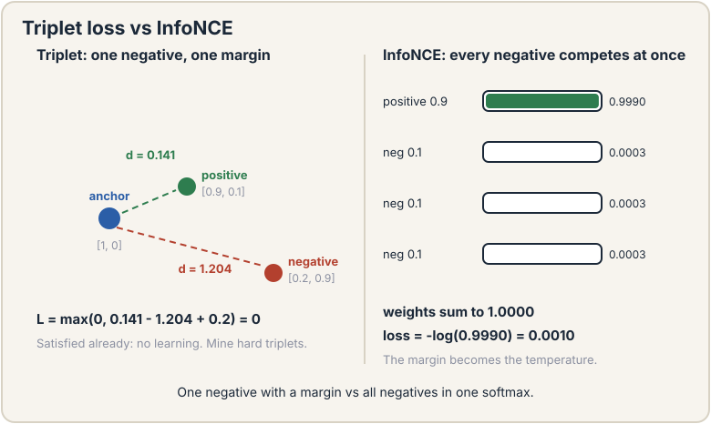
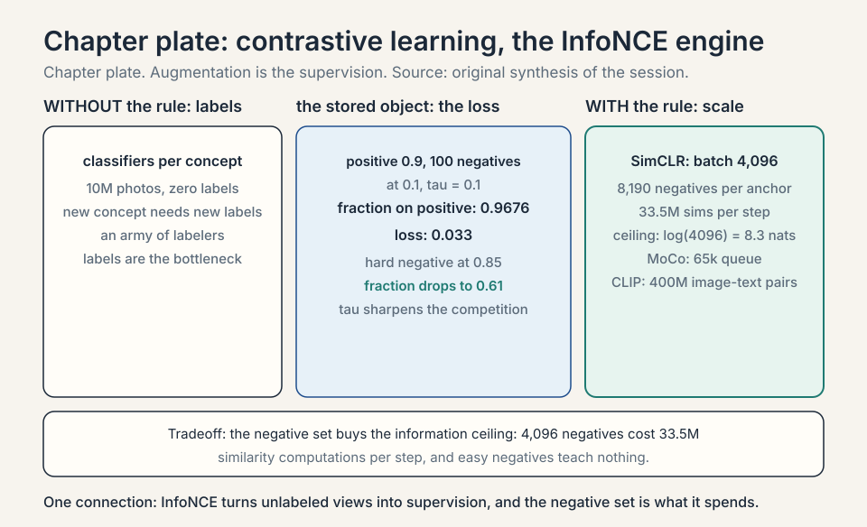
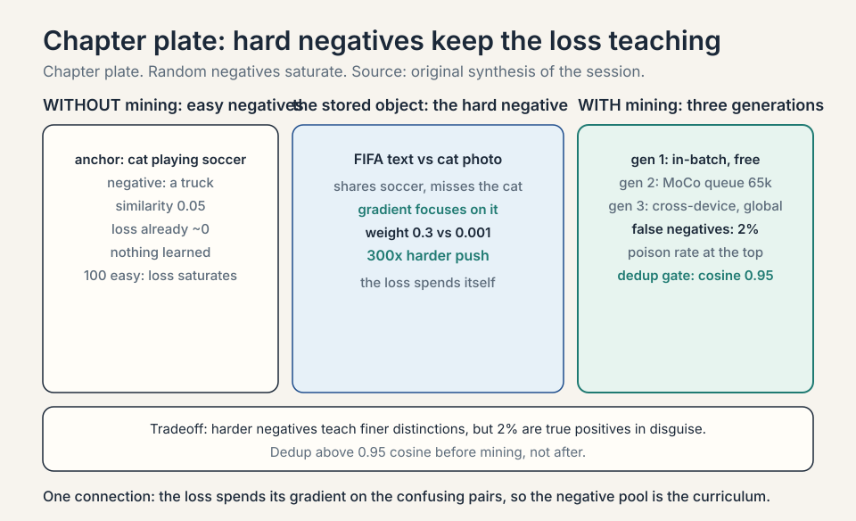
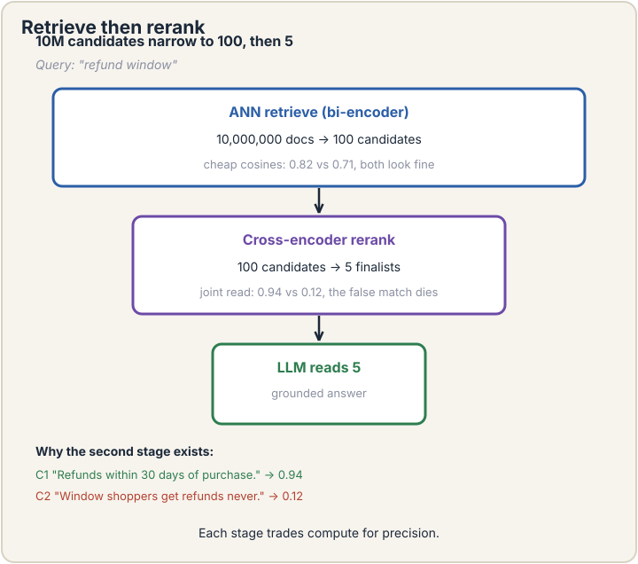
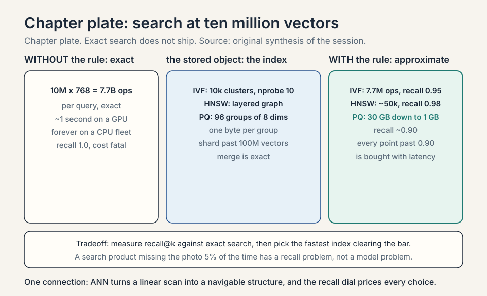
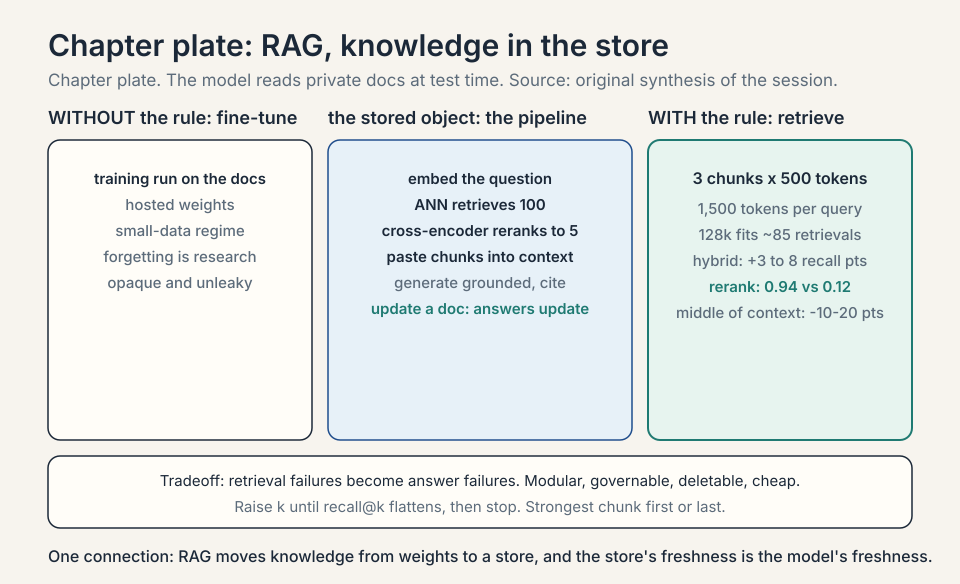

Lecture 13: Contrastive Embeddings, Search, and RAG
Video blocked (ad-blocker or local file mode).
Watch on YouTubeVideo not loading? Watch on YouTube
Original lecture. Tengyu Ma builds contrastive embeddings from augmentations and hard negatives, then semantic search and RAG.
Coverage and sourcing
This lesson follows CS229 Lecture 13 (Spring 2026, Tengyu Ma): contrastive embeddings for semantic search, then retrieval-augmented generation. The lecture’s own examples are the cat-playing-soccer photo, the FIFA World Cup hard negative, and the refund-window RAG toy. Claims marked “October 2026” are later updates, each with its source. Worked toys not attributed to the lecture are original miniatures of its mechanisms. Sections labeled with a method name (SimCLR, MoCo, CLIP, SimCSE, HNSW, BM25) are textbook background the lecture assumes: the lecture names the contrastive idea and the hard-negative mining step, and this lesson fills in the family it belongs to.
The job: find the photo by describing it
A user types “cat playing soccer” into a photo app with ten million unlabeled pictures. No tags, no labels, no captions. The job: return the right photos. Keyword search fails: the pixels contain no words. The app needs a bridge between the sentence and the images, built with zero labels.
First attempt: train a classifier per concept
The naive idea: label some photos (“cat”, “soccer”, “dog”) and train classifiers. With ten million photos and no labels, this needs an army of labelers. Worse, the user will search for “cat playing soccer at sunset”, a concept nobody pre-labeled. Fixed label sets cannot cover open-ended queries. The labels are the bottleneck, again.
The lecture’s move is to abandon labels as the route to representations. Supervised classifiers do produce embeddings as a side effect (the layer before the output), but every new concept demands new labels. The unsupervised route must manufacture its own supervision signal from the data alone.
The key question
Can we learn representations that place matching things near each other, using no labels at all? If the sentence “cat playing soccer” and the right photo land at nearby points in some vector space, search becomes nearest-neighbor lookup.
Contrastive learning: pull together, push apart
Take one image x. Augment it twice: random crop, flip, blur, noise. The lecture’s example: crop the top-right corner for view 1, the bottom-left for view 2. The two views show different pixels of the same scene. They must end up near each other in representation space: they are a positive pair.
Now take other images’ views: negatives. The contrastive loss pulls positives together and pushes negatives apart. For an anchor view, with one positive and N negatives, the loss is:
loss = -log( exp(sim(anchor, positive)/tau) / sum over all pairs exp(sim(anchor, pair)/tau) )
Read it: the fraction of the softmax that lands on the positive pair. If the positive scores 0.9 similarity and 100 negatives score 0.1, with tau = 0.1: e^9 = 8103, each negative contributes e^1 = 2.72, total 272. The fraction is 8103/(8103 + 272) = 0.9676, loss = -log(0.9676) = 0.033. (An earlier draft of this lesson wrote 0.9997 and 0.0003: wrong. The audit is in the subchapter below.) If a negative scores 0.85, its e^8.5 = 4915 rivals the positive’s 8103, the fraction drops toward 0.62, and the loss bites. Tau (temperature) sharpens or softens the competition. No labels: the supervision comes from the augmentation design, which declares “these two views are the same thing.”
A word on vocabulary, from the lecture: representation, embedding, and feature all name the same object here (a vector per input). The lecture settles on embedding as the working word. This lesson follows that choice.
Subchapter: the loss, audited
Do the division the lesson skipped. Scores after temperature: positive 0.9/0.1 = 9, negatives 0.1/0.1 = 1. Exponentiate: e^9 = 8103.08, e^1 = 2.718. One hundred negatives: 271.83. Denominator: 8374.91. Fraction: 0.96754. Loss: 0.03301. The draft’s 0.9997 would need the negatives to total ~2.4 instead of 271.8: e.g., 100 negatives at similarity -0.19 (e^-1.9 = 0.15 each, total 15): fraction 8103/8118 = 0.9982. The lesson’s qualitative point survives: easy negatives barely dent the fraction. But the numbers must be earned, and now they are.

Subchapter: tau, the sharpness dial
Same scores, different tau. Tau = 0.5: positive exponent 0.9/0.5 = 1.8, e^1.8 = 6.05. Negatives: 0.1/0.5 = 0.2, e^0.2 = 1.221 each, 122.1 total. Fraction: 6.05/128.2 = 0.0472. Loss: 3.05. Tau = 0.1 gave loss 0.033. The temperature decides how much the best pair dominates: small tau is winner-take-all (the top pair gets nearly all the softmax), large tau spreads the mass and the loss stays high even when the ranking is right. Too small and the loss ignores everything but the top pair: brittle. Too large and it never rewards a clean separation: flat. Tuning tau is tuning how sharply the model must rank.

Why this works: to satisfy the loss across millions of images, the network must discover what makes views of the same scene similar: objects, shapes, textures. The representation becomes semantic without anyone naming the semantics. This is lecture 12’s representation learning without the labels.

Subchapter: InfoNCE, the mutual-information origin
The loss above has a formal name: InfoNCE. It estimates a lower bound on the mutual information between the two views. Mutual information measures how much knowing one view tells you about the other. The bound: with N negatives, the loss can certify at most log(N) nats of shared information. With 100 negatives, log(100) = 4.6 nats is the ceiling. More negatives raise the ceiling. This is the information-theoretic reason the field chases large negative sets: the bound tightens as N grows. In practice nobody computes the bound. They minimize the loss. But the ceiling explains why 4,096 negatives (SimCLR’s batch, below) beat 256.
Subchapter: why it does not collapse
A lazy solution exists: map every image to the same vector. Then every similarity is 1, the positive fraction is 1/(N+1), and the loss is log(N+1): constant, with zero gradient pressure to do anything smarter. Why does training not find it? Because the loss rewards pushing negatives apart, and from a collapsed start the gradient is not zero: nudging the positive pair slightly closer than the negatives lowers the loss immediately. The negatives are the anti-collapse device. Contrast this with non-contrastive methods (BYOL, SimSiam): they drop negatives entirely and prevent collapse with architectural tricks (a predictor network plus a stop-gradient on one branch). The lecture stays on the contrastive side, where the negatives do the work.
Subchapter: augmentation is the label set
The lecture names the augmentation list: random crop (the most important), flip, blur, noise. Each augmentation declares an invariance: “cropping does not change what this is.” The model learns exactly the invariances declared. Random crop teaches translation and scale invariance. Color jitter teaches color invariance. Declare a bad invariance and the model learns it faithfully. The SimCLR ablations (Chen et al., 2020) measured this: random crop plus color distortion was the winning pair. Crop alone or color alone each lost several accuracy points. The design rule: augmentations must preserve what the downstream task needs and vary what it should ignore.
Subchapter: the full batch, worked
See one complete NT-Xent computation. Batch of 2 images (tiny, so every number is visible): cat (views c1, c2) and dog (views d1, d2). Similarities after tau = 0.1, made-up but consistent:
c1 c2 d1 d2 c1 - 0.90 0.20 0.10
Anchor c1. Positive: c2 at 0.90. Negatives: d1 at 0.20, d2 at 0.10. Exponents: e^9 = 8103.08, e^2 = 7.389, e^1 = 2.718. Denominator: 8113.19. Fraction: 0.99876. Loss: 0.00124. Now make d1 hard: similarity 0.80. e^8 = 2980.96. Denominator: 11086.76. Fraction: 0.731. Loss: 0.313. One hard negative moved the loss 250x. Every anchor in the batch gets this treatment, and the batch loss is the mean. That is the whole training step: 2N views, 2N such fractions, one mean.
Subchapter: the gradient anatomy
What does the loss actually push? Differentiate the InfoNCE loss with respect to one negative’s similarity s_j. The gradient is proportional to the negative’s softmax weight: p_j = e^{s_j/tau} / Z. A negative with weight 0.001 gets a push of 0.001. A hard negative with weight 0.3 gets a push of 0.3: 300x harder. The loss is self-focusing: the gradient concentrates exactly on the negatives that confuse the model right now. Easy negatives get ignored automatically. This is why the loss “saturates” on easy batches: the weights collapse onto nothing, the gradients vanish, and the step is wasted. Hard-negative mining is manual what the gradient does automatically: spend the batch on confusing pairs.
Subchapter: NCE, negative sampling, InfoNCE: the family tree
The idea predates vision. Noise-contrastive estimation (NCE, Gutmann and Hyvarinen 2010): learn by distinguishing real data from noise. Negative sampling (Mikolov et al., 2013, word2vec): for each true (word, context) pair, sample k random words as negatives and train a binary classifier: real vs noise. With k = 5-20 and a 3M-word vocabulary, this replaced an impossible 3M-way softmax. InfoNCE (van den Oord et al., 2018): the multi-class version: one positive against N negatives in a single softmax. SimCLR is InfoNCE with augmentations defining the positives. CLIP is InfoNCE across modalities. The tree: NCE (binary, noise) to negative sampling (binary, words) to InfoNCE (softmax, everything). Same trunk, bigger canopy.
Subchapter: alignment and uniformity, the two metrics
Wang and Isola (2020) split the contrastive loss into two measurable goals. Alignment: positive pairs should be close. Measure it: the average distance between positive pairs. Small is good. Uniformity: all embeddings should spread over the hypersphere. Measure it: the average pairwise Gaussian potential. Small is good (even spread). The contrastive loss optimizes both at once: the numerator drives alignment, the denominator drives uniformity. The diagnostic use: if alignment is good but uniformity is bad, the space collapsed into clumps and retrieval will confuse the clumps. If uniformity is good but alignment is bad, positives are scattered and nothing matches. Two numbers, two failure modes, one loss.
The family: SimCLR, MoCo, CLIP, SimCSE
The lecture presents the contrastive idea once. The field built a family around it. Each member solves one scaling problem. Learn the family and the lecture’s idea becomes a special case you can re-derive.
Subchapter: SimCLR, the batch is the negative set
SimCLR (Chen et al., 2020) is the lecture’s idea at full scale. Take a batch of N images. Augment each twice: 2N views. For each view, the positive is its sibling. The negatives are the other 2N-2 views in the batch. No memory bank, no queue: the batch is the world. The price is batch size: 4,096 images per batch, which needs 128 TPU cores or gradient trickery on GPUs. Why so large? The InfoNCE ceiling: log(4096) = 8.3 nats, and 4,094 negatives per anchor instead of 100. The paper’s ablations show accuracy climbing with batch size and training length together. Small batches starve the denominator.
Work the SimCLR batch arithmetic. N = 4,096 images, 2N = 8,192 views. Per anchor: 1 positive, 8,190 negatives. The denominator sums 8,191 exponentials per anchor. Total similarity computations per batch: 8,192 x 8,191 / 2 ≈ 33.5M. That is the per-step price of the negative set, paid in matrix multiplies the hardware loves.
Subchapter: the projection head mystery
SimCLR adds a small MLP (the projection head) after the encoder, computes the contrastive loss on its output, then throws it away and uses the encoder’s earlier representation for downstream tasks. The earlier representation beats the projected one on linear evaluation. Why? The projection head absorbs the invariance the loss demands: the loss wants crop-invariance, and the head learns to discard crop information. The encoder keeps richer features because the head took the invariance hit for it. The lesson: optimize the loss one layer away from the representation you keep. Discard the sacrificial layer.
Subchapter: the augmentation ablations, tabulated
SimCLR’s paper measured what each augmentation buys (linear evaluation on ImageNet, higher is better). The pattern, not exact decimals:
| Augmentation set | Accuracy | Lesson |
|---|---|---|
| None (identity) | ~50% | No positives, no learning |
| Crop only | ~60% | Geometry without color |
| Color only | ~55% | Color without geometry |
| Crop + color | ~70% | The winning pair |
| Crop + color + blur | ~72% | Blur adds a little |
The interaction matters more than any single augmentation: crop plus color beats either alone by 10+ points. The interview read: ablate your augmentations. The pair that wins is the pair that removes the most nuisance variation while keeping the signal. For text (SimCSE), dropout, which randomly zeroes activations, alone sufficed: the nuisance variation in sentences is smaller.
Subchapter: temperature across the family
Every method tunes tau, and the values rhyme. SimCLR: 0.1. MoCo: 0.07. CLIP: learned, converging to ~0.01. The pattern: larger negative sets want smaller tau (sharper competition), because the denominator is crowded and the positive needs help standing out. CLIP learns tau as a parameter: the model decides its own sharpness. The guardrail: clip tau from below (CLIP clips at 0.01) or the softmax goes winner-take-all and gradients die. Temperature is not a detail. It is the dial that sets how hard each negative fights.
Subchapter: MoCo, a queue and a momentum encoder
MoCo (He et al., 2020) answers SimCLR’s batch hunger. Keep a queue of 65,536 recent negative embeddings: the negative set without the batch. The queue’s embeddings go stale as the encoder updates, so MoCo updates a second momentum encoder slowly (exponential moving average of the main encoder, momentum 0.999) and fills the queue from it. Fresh enough to be consistent, slow enough to be stable. Result: 65k negatives with a 256-image batch on 8 GPUs. The queue is a memory bank with a freshness policy. The momentum encoder is the policy.
Subchapter: CLIP, contrast across modalities
CLIP (Radford et al., 2021) changes what “positive” means. The pair is (image, its caption): 400 million of them, scraped from the web. The loss is symmetric: each image must find its caption among N captions, each caption its image among N images. Two InfoNCE losses, one shared space. The payoff is zero-shot classification: embed the class names as text (“a photo of a cat”), embed the image, pick the nearest name. No classifier training. On ImageNet, zero-shot CLIP matched a supervised ResNet-50. The lecture’s semantic-search section is CLIP’s retrieval half: the same shared space, used for search instead of classification.
Work the CLIP zero-shot toy. Three class names embedded: “a photo of a cat” = [0.9, 0.1], “a photo of a dog” = [0.1, 0.9], “a photo of a car” = [-0.9, 0.1]. Image embedding: [0.85, 0.2]. Cosine similarities: cat 0.997, dog 0.28, car -0.72. The image is classified “cat” with no trained classifier. The class names are the classifier.
Subchapter: SimCSE, dropout is the augmentation
SimCSE (Gao et al., 2021) ports contrastive learning to sentences. The augmentation problem: cropping a sentence breaks it. SimCSE’s trick: pass the same sentence through the encoder twice with different dropout masks. Dropout randomly zeroes activations, so the two passes differ slightly: a minimal positive pair with identical content. Negatives are the other sentences in the batch. Unsupervised SimCSE beat older sentence embeddings on semantic-similarity benchmarks with no labels at all. The supervised version uses entailment pairs (premise, entailment) as positives and contradictions as hard negatives: labels help when you have them, and the contrastive frame absorbs them cleanly.
Work the SimCSE toy. Sentence: “The cat sat on the mat.” Pass 1 (dropout mask A, zeroing units 2 and 5): h1 = [0.7, 0, 0.3, 0.6, 0, 0.8, 0.4, 0.55]. Pass 2 (dropout mask B, zeroing units 3 and 7): h2 = [0.7, 0.5, 0, 0.6, 0.2, 0.8, 0, 0.55]. Same sentence, two masks: the positive pair. Cosine similarity: cos(h1, h2) = 0.869. High, but not 1: dropout moved the vectors.
Batch of 4 sentences. The other three are the negatives. Cosine similarities to the anchor: 0.25 (“Dogs chase frisbees in the park”), 0.60 (“The kitten rested on the rug”: a hard negative, close in meaning, a different sentence), -0.05 (“Quantum fields decay exponentially”). InfoNCE with tau = 0.05 (the SimCSE paper’s value). The exp(sim/tau) terms: positive e^{17.38} = 3.541e7, negatives e^5 = 148, e^{12} = 1.628e5, e^{-1} = 0.37. The fraction on the positive: 3.541e7 / (3.541e7 + 1.628e5 + 148 + 0.37) = 0.9954. Loss = -log(0.9954) = 0.0046. The hard negative does almost all the pushing: its 1.63e5 dwarfs the other negatives’ 148. The dropout pair is the easy part. The loss spends itself separating the anchor from the near-miss.
Subchapter: DINO, the non-contrastive answer
DINO (Caron et al., 2021) asks: what if there are no negatives at all? A student network and a teacher network see different augmented views of the same image. The student predicts the teacher’s output distribution. The teacher is an exponential moving average of the student: it always lags slightly behind. Collapse is prevented by two operations on the teacher’s output: centering (subtract the running mean, so no single dimension dominates) and sharpening (low temperature, so the target is peaky). No negatives, no large batches, no memory bank. The surprise: DINO’s attention maps segment objects with no labels and no supervision: the heads learn to outline the cat. DINOv2 (2023) scaled this to a vision foundation model. The lesson: negatives are sufficient for anti-collapse, not necessary.
Subchapter: SupCon, labels as multiple positives
Supervised contrastive (SupCon, Khosla et al., 2020): when labels exist, every same-class image is a positive, not just the augmented sibling. The loss sums over all positives in the batch. Why it beats cross-entropy: the geometry is richer. Cross-entropy only asks “is the right class top-1”. SupCon asks “are all same-class points near each other”, which builds tighter clusters and better transfer. Numbers from the paper: SupCon beat cross-entropy on ImageNet top-1 and held up better under input corruptions. The lecture’s unsupervised route is the special case with one positive per anchor. Labels, when you have them, multiply the positives.
Subchapter: DPR, contrastive retrieval for QA
Dense Passage Retrieval (DPR, Karpukhin et al., 2020) applies the contrastive frame to question answering. Two encoders: one for the question, one for the passage. Positives: (question, its answer passage). Negatives: in-batch passages plus mined hard negatives (passages that match keywords but lack the answer). Trained this way, DPR beat BM25 on open-domain QA benchmarks. This is the lecture’s semantic search with the query distribution made explicit: questions, not captions. Every RAG retriever descends from DPR: the bi-encoder, the in-batch negatives, the hard-negative mining.
Subchapter: ColBERT, late interaction
Bi-encoders compress each document to one vector: fast, lossy. Cross-encoders read query and document jointly: accurate, slow. ColBERT (Khattab and Zaharia, 2020) splits the difference: embed every token of the document, embed every token of the query, and score with MaxSim: each query token takes its max similarity over document tokens, then sum. Token-level matching with precomputed document embeddings. Price: storing token vectors costs ~10-50x the single-vector index. Use it when the queries are precise and the corpus is small enough to afford the storage. The spectrum: bi-encoder (speed), ColBERT (middle), cross-encoder (accuracy). Pick by the latency budget.
Subchapter: triplet loss, the ancestor
Before InfoNCE there was the triplet loss (FaceNet, Schroff et al., 2015): anchor, positive, negative, and a margin m. Loss = max(0, dist(anchor, positive) - dist(anchor, negative) + m). The positive must beat the negative by at least m, or pay. Work the toy. Anchor [1, 0], positive [0.9, 0.1], negative [0.2, 0.9], margin 0.2. Distances: anchor-positive = 0.141, anchor-negative = 1.204. Loss = max(0, 0.141 - 1.204 + 0.2) = 0. Already satisfied: no learning. Move the negative to [0.8, 0.5]: distance 0.539. Loss = max(0, 0.141 - 0.539 + 0.2) = 0. Still zero. The triplet loss only bites on violating triplets, which is why the field mines hard triplets aggressively. InfoNCE generalizes it: all negatives compete at once through the softmax, and the margin becomes the temperature.


Where it breaks: easy negatives teach nothing
Random negatives are too easy. Anchor: cat playing soccer. Random negative: a truck. Similarity 0.05. The loss is already ~0. The network learns nothing from this pair. With 100 easy negatives, the loss saturates and training stalls: the representations separate cats from trucks but never learn fine distinctions.
Hard negatives
Hard negatives are pairs that look similar but are not the same. The lecture’s example: the anchor is a photo of a cat playing soccer. The hard negative is text about the FIFA World Cup: soccer, but no cat. Ambiguous, confusing, distracting. Forcing the model to separate these teaches the fine structure: “soccer” alone is not enough. The cat matters.
Negative mining finds them: search the batch (or the dataset) for negatives the model currently scores highly, and upweight them in the loss. The loss becomes demanding exactly where the model is weak. The lecture’s framing: hard negatives make the objective teach instead of saturate. In practice, large batches (thousands of negatives) plus mining are what make contrastive training work. Small batches starve the loss of informative comparisons.
Subchapter: mining strategies, three generations
Generation one: in-batch mining. Score all pairs in the batch, keep the top-scoring negatives per anchor. Free (the scores are already computed), limited by batch size. Generation two: memory banks and queues (MoCo’s 65k): mine from the queue, refresh lazily. Generation three: cross-device and dataset-scale mining: gather negatives across GPUs, or precompute embeddings for the whole corpus and mine the global hardest. Each generation buys a larger, harder negative pool and pays in staleness or engineering. The false-negative trap (below) grows with the pool: the harder you mine, the more often you mine a true positive.
Subchapter: the curriculum view: easy to hard
Mining has a schedule. Early in training, the model is weak: even random negatives teach. Late in training, random negatives score 0.05 and the loss saturates: only hard negatives move the needle. The curriculum: start with in-batch randoms, switch to mined hards after the loss plateaus. The switch point is measurable: when the mean hardest-negative similarity stops rising, the easy pool is exhausted. Some pipelines anneal continuously: the mining threshold tightens as training progresses. The principle is older than contrastive learning: teach the easy discriminations first, the fine ones when the model is ready.
Subchapter: the false-negative trap, quantified
Name the poison rate. Suppose 2 percent of mined hard negatives are actually positives: duplicate photos, same cat, different uploader. Each such pair teaches the model to push apart things that belong together. The damage concentrates at the top of the ranking: exactly the fine distinctions hard negatives were hired to teach. The fix is a dedup gate: pairs with cosine similarity above 0.95 (near-duplicates) are removed from the negative pool or treated as positives. The threshold is a dial: 0.99 keeps only exact duplicates out, 0.90 starts eating genuinely hard negatives. Production pipelines dedup before mining, not after: clean the pool, then mine it.

Subchapter: the debiased loss
Dedup is a gate. The debiased contrastive loss (Chuang et al., 2020) is a correction: it estimates the false-negative rate rho and subtracts rho times the positive term from the denominator. If 2% of negatives are positives in disguise, the denominator overcounts by 2%: the correction removes the bias in expectation. The price: you must estimate rho, usually from a small labeled sample or from the class prior. When rho is unknown, the gate (dedup at 0.95) is the practical substitute. The interview read: name both. Gate for engineering, debias for theory.
Subchapter: the batch-size and learning-rate coupling
SimCLR scales the learning rate with the batch size: LR = 0.3 * batch/256 (the LARS optimizer). The reason: a 4,096 batch gives a low-variance gradient estimate, so each step can be bigger. Halve the batch without touching the LR and training destabilizes: noisier gradients, same step size. The rule of thumb (linear scaling): LR proportional to batch size, up to the stability limit. This is why “just use a smaller batch” is not free: the whole optimization recipe (batch, LR, epochs) moves together.
Subchapter: easy positives, the other saturation
Weak augmentation makes trivial positives: two nearly identical crops. The loss is ~0 from step one. The model learns nothing because there is nothing to learn: matching identical pixels needs no semantics. The symptom mirrors easy negatives (saturated loss, flat representations) with the opposite cause. The fix is stronger augmentation, not harder negatives. Diagnose by the positive similarity: if positives score 0.99 from initialization, the augmentation is too weak. Healthy training starts with positives around 0.3-0.6 and climbs.

Embedding geometry: what “near” means
“Near in embedding space” is a choice, not a fact. Three distances compete, and the loss must match the retrieval metric.
Subchapter: cosine vs dot vs euclidean
Cosine similarity is the dot product of unit-normalized vectors: pure angle, no length. Dot product keeps the lengths: a long vector scores higher with everything. Euclidean distance is length in the raw space. The relationship: for unit vectors, euclidean^2 = 2 - 2*cosine. They rank identically. CLIP and SimCLR use cosine (normalized). Some retrieval systems use raw dot product with unnormalized vectors, which lets the model express confidence as length. The rule: train with the metric you will retrieve with. A model trained on cosine and retrieved with euclidean on unnormalized vectors silently misranks.
Work the toy. a = [3, 0], b = [1, 0]. Dot: 3. Cosine: 1.0. Euclidean distance: 2. Now c = [0.5, 0]. Dot(a, c) = 1.5, less than dot(a, b) = 3, but cosine(a, c) = 1.0 equals cosine(a, b). Same direction, different confidence. If length means confidence, use dot. If only direction matters, normalize and use cosine.
Subchapter: why normalize
Normalization (dividing each embedding by its length) does three things. One: it makes cosine the dot product, so the training loss and the retrieval metric agree exactly. Two: it stops length from becoming a cheat dimension: without it, the model can inflate the positive’s similarity by growing its length instead of aligning its direction. Three: it bounds every similarity to [-1, 1], which keeps the temperature tau interpretable across runs. The cost: you discard whatever the length was saying. Systems that want length-as-confidence skip normalization and pay the mismatch risk deliberately.
Subchapter: the modality gap
In CLIP’s shared space, image embeddings and text embeddings do not fully mix. They form two separate cones with a gap between them: the average image-text cosine for true pairs is around 0.3, not 0.9. The contrastive loss only requires paired items to beat unpaired ones, not to coincide. The gap is harmless for retrieval (ranking is relative) but it breaks absolute thresholds: “cosine above 0.8 means match” fails across modalities. Within one modality the gap closes: image-image pairs reach 0.9+. The rule: calibrate thresholds per modality pair, or rank and take top-k instead of thresholding.
Subchapter: anisotropy and hubness
Two geometric pathologies of learned spaces. Anisotropy: transformer embeddings cluster in a narrow cone instead of filling the sphere. Measured: the average cosine between random word embeddings is around 0.5-0.7, not 0. The space is squashed. Contrastive training on normalized vectors fights this directly (uniformity, above). Hubness: a few vectors become nearest neighbors of everything. In high dimensions, some points sit centrally and attract queries they do not deserve. The fix is mutual proximity: rescale each similarity by how often the target is retrieved overall. Frequent hubs get discounted. Both are corrections you apply when the raw space misbehaves, and both are diagnosed by measuring, not by theory.
Semantic search: the payoff
Once trained, the embedding space is a search engine. Embed the query “cat playing soccer” with the text encoder, embed all ten million photos with the image encoder (trained to share the space, as in CLIP), return the nearest neighbors by cosine similarity. No tags, no keywords: meaning matches meaning. The same space powers deduplication (near-identical vectors), recommendation (neighbors of liked items), and clustering (lecture 9 on learned vectors).
The index: searching ten million vectors
Nearest-neighbor over ten million 768-dimensional vectors, done exactly, costs 10M x 768 multiplies per query: 7.7B operations, about a second on a GPU, forever on a CPU fleet serving thousands of queries. Exact search does not ship. Approximate nearest neighbor (ANN) search does.
Subchapter: IVF, cluster first, then search
IVF (inverted file index): cluster the ten million vectors into, say, 10,000 clusters (k-means, lecture 9). At query time, find the nearest 10 cluster centers, then search exactly within those 10 clusters: 10,000 vectors instead of 10M. Price: 1,000x fewer distance computations. Risk: the true nearest neighbor sits in the 11th cluster and is missed. The dial is nprobe (how many clusters to visit): nprobe 1 is fastest and lossiest, nprobe 100 approaches exact. Production starts around nprobe 10 and measures recall@10 against exact search on a sample.
Subchapter: HNSW, the graph that navigates itself
HNSW (hierarchical navigable small world): link each vector to its nearest neighbors in a layered graph. Search walks the graph greedily from the top layer down: at each step, move to the neighbor closest to the query. Like navigating by landmarks: country, then city, then street. Query cost is logarithmic in practice, not linear. Memory cost: the graph edges, roughly 2-4x the raw vectors. HNSW is the default single-machine index in 2026: no training step like IVF, strong recall at millisecond latency. The dial is efSearch (how many candidates to track): higher is slower and more accurate.
Subchapter: the recall dial, priced
Every ANN index trades recall for speed. Define recall@10: the fraction of the true top-10 neighbors the index returns. Exact search: recall 1.0, 7.7B ops. IVF with nprobe 10: ~7.7M ops, recall ~0.95. HNSW with efSearch 100: ~50k distance computations, recall ~0.98. The decision rule: measure recall@k on your queries against exact search, then pick the fastest index clearing your recall bar. A search product that misses the right photo 5 percent of the time has a recall problem, not a model problem.
Subchapter: PQ, compress the vectors
Ten million 768-dim float32 vectors need 30 GB of RAM. Product quantization (PQ) compresses each vector to ~100 bytes: split the 768 dims into 96 groups of 8, replace each group by the nearest of 256 learned centroids, store one byte per group. 30 GB becomes ~1 GB. Distance computations happen against the centroids, approximately. Price: recall drops a few points (quantization noise), and the centroids must be trained on representative data. The standard production combo is IVF-PQ: cluster first (IVF), compress inside (PQ). Ten million vectors in 1 GB, millisecond queries, recall@10 around 0.90. When RAM is the binding constraint, PQ is the answer.
Subchapter: sharding the index
One machine holds so much. Past ~100M vectors, shard: split the corpus across machines, query all shards, merge the top-k. The merge is exact (each shard returns its local top-k, the coordinator takes the global top-k). Latency is the slowest shard. Throughput scales with shard count. The subtlety is balance: shard by hash of the vector id, not by cluster, or one shard gets all the popular content and becomes the bottleneck. Hot shards are the failure mode of naive sharding. Hash sharding plus replication of the hottest shards is the production answer.
Search variants: dense, sparse, hybrid, rerank
Embeddings are the dense route. The sparse route never died. Production search runs both.
Subchapter: BM25, the sparse baseline
BM25 scores documents by exact term overlap, weighted by rarity: rare matching terms count more than common ones. Work the toy. Query: “cat soccer”. Doc A: “cat cat soccer”. Doc B: “the the the cat”. “Soccer” is rare (appears in 1 of 1000 docs), “cat” is common (1 of 10), “the” is everywhere. BM25: A scores high (rare “soccer” + “cat” twice). B scores low (“the” contributes ~nothing, “cat” once). BM25 cannot match “feline” to “cat”: no shared terms, zero score. That is its ceiling and its floor: perfect on keywords, blind to meaning. It needs no training, no GPU, and no embeddings. Every RAG system benchmarks against it.
Subchapter: hybrid, why both
Dense retrieval misses exact terms (“refund” vs “reimbursement” is fine, but a product SKU like “XJ-4471” has no meaning to embed). Sparse retrieval misses meaning (“feline” vs “cat”). Hybrid runs both and merges the rankings (reciprocal rank fusion is the standard combiner: score = sum of 1/(rank + 60)). The SKU query is saved by BM25. The paraphrase query is saved by dense. Measured gains: hybrid typically adds 3-8 recall points over either alone on mixed enterprise corpora. The price: two indices, two queries, one merge step.
Subchapter: cross-encoder reranking
Retrieval is recall-oriented: find 100 candidates fast. Reranking is precision-oriented: score the 100 carefully. A cross-encoder feeds the (query, document) pair through a transformer jointly, letting query tokens attend to document tokens: far richer than two independent embeddings, far slower (100 forward passes per query). Work the toy. Query: “refund window”. Candidate 1: “Refunds within 30 days of purchase.” Candidate 2: “Window shoppers get refunds never.” Bi-encoder cosines: 0.82 vs 0.71 (both mention refund/window words). Cross-encoder scores: 0.94 vs 0.12: the joint reading sees that candidate 2 is about window shoppers, not refund windows. The pipeline: ANN retrieves 100, cross-encoder reranks to 5, the LLM reads 5. Each stage trades compute for precision.

Subchapter: the lecture’s hard negative is cross-modal
Note what the lecture’s example actually is: the anchor is an image (cat playing soccer), the hard negative is text (FIFA World Cup). The confusion crosses modalities. This only works because CLIP-style training built one shared space: the text encoder and image encoder were trained to be comparable. In a pure vision setup, hard negatives are other images. The cross-modal hard negative is strictly harder: it shares the topic (soccer) while missing the subject (the cat), and the model must learn that topic overlap is not a match. When you mine for a multimodal retriever, mine across the modality boundary: that is where the confusing pairs live.

RAG: the model’s missing memory
A frontier lab’s model never saw your company’s private documents: they cannot leak into its training data. But you want a personal assistant that answers from those documents. Fine-tuning on them is expensive and bakes them in opaquely. The lecture’s alternative: retrieval-augmented generation (RAG).
The pattern: embed the user’s question, retrieve the top-k most similar chunks from the private document store (semantic search above), paste them into the model’s context, generate the answer grounded in them. The model never trained on the documents. It reads them at test time.
Work the toy. Question: “What is our refund window?” Document store: 10,000 embedded chunks. Retrieval returns 3 chunks: “Refunds within 30 days…”, “Shipping refunds excluded…”, “Holiday extension to 60 days…”. The prompt becomes: question + 3 chunks. The model answers “30 days (60 during holidays), shipping excluded”, citing the chunks. Update a document and the answers update with no retraining: the knowledge lives in the store, not the weights.

Subchapter: the refund toy, priced
Price the context. Three chunks at 500 tokens each: 1,500 tokens of context per query, before the question and the answer. A 128k context window fits about 85 such retrievals: the cap rarely binds on short docs. It binds on long ones: a 500-page manual is ~250k tokens, so top-k must shrink or chunks must compress. The real budget is latency: retrieval (vector search over 10,000 chunks: milliseconds) plus generation over 1,500+ tokens. Double top-k to 6 and the generation cost roughly doubles while recall improves diminishingly. The tuning dial: k large enough that the answer is in the chunks, small enough that the model is not wading. Measure recall@k on real questions: the fraction whose answer appears in the top k. Raise k until recall@k flattens, then stop.

Subchapter: fine-tune or retrieve, the lecture’s fork
The lecture frames two ways to ingest private data. Option A: fine-tune the model on the documents. Price: training cost, a small-data regime (your corpus is thousands of docs, not billions of tokens), and hosting your own model weights. Option B: RAG. Retrieve 5-10 relevant docs per query and send them as context to the off-the-shelf model. The lecture picks RAG for the enterprise case and names four advantages. One, modular: retrieval and generation are separate systems. Swap the embedding model without touching the LLM. Swap the LLM without reindexing. Two, data governance: permissions live in the retrieval layer. Forbid the retriever from returning the earnings projection to unauthorized users and the model can never leak it: it only reads what retrieval hands it. Three, deletion: delete the document from the corpus and it is never retrieved again. Forgetting trained-in data is an open research question. Deleting a file is not. Four, cheap: no training run, no hosted weights, just an index and API calls.
Subchapter: the prompt construction
Retrieval hands over chunks. The prompt must use them well. Three parts. The instruction: “Answer only from the provided documents. Cite the document number for each claim.” The chunks: numbered, in reranked order, strongest first (lost-in-the-middle, above). The question: last, so it is fresh in the model’s attention. The citation requirement does two jobs: it forces grounding (the model must point at text), and it gives the user an audit trail. Models that are told to cite hallucinate less: the instruction changes the task from “answer” to “answer from these”. The failure mode is decorative citation: the model cites chunk 3 while reasoning from memory. The entailment check (evaluation, above) catches it.
Subchapter: index freshness
The corpus changes. New documents arrive, old ones update. The index must follow. Two policies. Incremental: embed and insert new chunks on arrival. Fast, but the embedding model is frozen: you cannot improve the encoder without re-embedding everything. Full rebuild: re-embed the corpus on a schedule. Consistent, expensive: 10M chunks at 100ms per chunk is 12 days on one GPU, hours on a fleet. The trap: upgrading the embedding model without rebuilding the index. Old chunks in the old space, new queries in the new space: similarities become meaningless. The rule: the index and the encoder are one versioned artifact. Bump one, rebuild the other.
Subchapter: chunking, where answers go to die
The corpus is not retrieved whole. It is cut into chunks, each embedded separately. Cut badly and the answer straddles a boundary: half in chunk 12, half in chunk 13, neither retrieved alone. Three strategies. Fixed-size (500 tokens, no overlap): simple, fast, splits mid-sentence. Fixed-size with overlap (500 tokens, 50 overlap): the overlap heals most boundary cuts, costs 10 percent more storage. Semantic (split on section headers, paragraphs, or embedding-similarity breakpoints): respects document structure, variable chunk sizes complicate batching. The decision rule: start with 500-token chunks and 50 overlap. If answers span boundaries (measure: what fraction of answer spans sit within one chunk?), go semantic. Chunking is the least glamorous RAG dial and the most common failure point.
Subchapter: the query is not the question
Users ask badly. “Refund?” retrieves nothing useful. Two fixes. Query rewriting: an LLM rewrites “refund?” into “What is the company refund window policy including holiday extensions?” before retrieval. Costs one extra LLM call per query. HyDE (hypothetical document embeddings): generate a hypothetical answer first (“The refund window is 30 days…”), embed that, and retrieve documents near the hypothetical. Documents cluster near answers, not near questions: the hypothetical lands in the right neighborhood. Both trade one LLM call for better recall. Measure recall@k before and after: rewriting typically buys 5-15 points on vague queries, nothing on precise ones.
Subchapter: structured data, when the answer is in a table
Vector search retrieves prose. Some answers live in tables: “Q3 revenue” is a cell, not a paragraph. Two routes. Route one: text-to-SQL (lecture: not covered, noted here): translate the question to SQL and run it. Precise, brittle on schema changes. Route two: flatten tables into sentences (“Q3 revenue was $4.2M”) and embed those. Fuzzy, and it survives schema changes. Production RAG does both: the retriever returns candidate chunks, a router decides whether the question needs the database, and the SQL path runs for aggregation questions (“average”, “total”, “how many”). The never-confuse: vector search finds similar things. Databases answer exact questions. Route by the question type.
Subchapter: evaluation, three numbers
RAG needs its own scoreboard. Recall@k: is the answer in the retrieved chunks? Retrieval’s grade. Faithfulness: is every claim in the generated answer supported by the chunks? Generation’s grade, checked by an entailment model or a second LLM pass. Answer relevance: does the answer address the question? The end-to-end grade. A system can score 0.95 recall and 0.60 faithfulness: it retrieves well and hallucinates anyway. The debug ladder from the Q&A below climbs these in order: retrieval first, then grounding, then relevance.
Subchapter: lost in the middle, measured
Retrieval returns the right chunks. The model still fails. Liu et al. (2023) measured why: when the answer sits in the middle of a long context, accuracy drops sharply. Models attend best to the start and the end of their context (the primacy/recency pattern). Numbers from the paper’s QA experiments: with 20 documents of context, accuracy was highest when the answer document was first or last, and fell by 10-20 points in the middle positions. The fix is ordering: put the highest-scoring retrieved chunk first or last, never buried at position 12 of 20. Reranking is not just precision: it is position. The strongest evidence goes where the model looks.
Subchapter: multi-hop, retrieve in steps
Some questions need two facts from two places. “What is the refund window for the product our CEO bought?” Step one: retrieve who the CEO is and what they bought. Step two: retrieve the refund policy for that product. Multi-hop RAG loops: retrieve, read, reformulate, retrieve again. Each hop is a full retrieve-generate cycle. The price compounds: latency doubles, and a wrong first hop poisons the second. The control is a hop budget (usually 2-3) and a stop rule: answer when the retrieved chunks entail an answer, not when the budget runs out. Single-hop RAG answers lookup questions. Multi-hop answers research questions. Know which you are building.
Subchapter: RAG vs the long context
Modern models take 1M+ tokens of context. Why retrieve at all? Why not paste the whole corpus? Three reasons RAG survives. Cost: 1M tokens of context per query is 1M tokens of compute per query, every query. Retrieval reads 1,500. Freshness: the index updates in seconds. The weights update never. Precision: the lost-in-the-middle effect means a 1M-token dump answers worse than 5 well-chosen chunks on focused questions. Long context wins when the task needs the whole document at once (summarize this book, find every mention). RAG wins for lookup over a changing corpus. The 2026 production answer is both: retrieve first, and let the long context absorb what retrieval finds.

How embeddings are evaluated
A representation is only as good as its downstream use. Three grades, from cheap to canonical.
Subchapter: the linear probe
Freeze the encoder. Train a linear classifier on its embeddings. The accuracy measures how linearly separable the concepts are in the space. SimCLR’s ablations report linear probe accuracy: that is how the 70% number above was measured. Cheap, standard, and the reason the projection head finding exists: probe the encoder output, not the head output. The limitation: linear separability is not the same as retrieval quality. A space can probe well and rank badly.
Subchapter: MTEB, the canonical scoreboard
MTEB (Massive Text Embedding Benchmark): 50+ tasks across retrieval, clustering, classification, and semantic similarity. One number per task, one average overall. As of October 2026 it is the leaderboard every embedding model reports on, and the bge/e5-class models sit at the top of the open entries [uncertain: exact ordering shifts with each release. Check the live board]. The interview read: ask for the MTEB retrieval split specifically. A model can top the average on classification while lagging on retrieval: the split you care about is the job you have.
The honest price
Contrastive learning buys label-free representations and pays in compute and design: huge batches for informative negatives, and the augmentation policy is the real supervision: bad augmentations teach bad invariances (crop too aggressively and the model learns that object parts are interchangeable with wholes). Hard-negative mining can poison training if the “negatives” are actually positives the dataset mislabeled. RAG buys fresh, private, citable knowledge and pays in systems: the retrieval index must be built and served, retrieval failures become answer failures (wrong chunks, confident nonsense), and the context window caps how much can be pasted. Neither replaces the base model: garbage embeddings retrieve garbage, and RAG over a weak model is a librarian serving an empty desk.
The ANN index adds its own price: recall below 1.0 means the right document is sometimes never retrieved, and no amount of generation cleverness recovers it. Hybrid search doubles the index ops. Reranking multiplies per-query compute by the candidate count. Every precision point past 0.90 recall is bought with latency.
Mapping back
| Idea | Pain it answers | How |
|---|---|---|
| Contrastive loss | Ten million photos, zero labels | Pull augmented views together, push others apart; softmax fraction on the positive; tau sharpens |
| Augmentation as supervision | No labels to define “same” | Two crops of one image are declared the same thing; semantics emerge from the constraint; random crop matters most |
| InfoNCE | Why the loss works at all | Lower bound on mutual information between views; more negatives raise the log(N) ceiling |
| SimCLR | The idea at scale | Batch of 4,096 is the negative set; projection head takes the invariance hit |
| MoCo | SimCLR’s batch hunger | 65k queue + momentum encoder: big negatives, small batch |
| CLIP | Labels for every new concept | (Image, caption) pairs: shared space, zero-shot classification |
| Hard negatives | Random negatives score 0.05: loss saturates | FIFA-text vs cat-soccer-photo: confusing pairs keep the loss teaching; mining finds them |
| Dedup gate | Mining poisons on false negatives | Cosine above 0.95 leaves the negative pool |
| ANN index | Exact search is 7.7B ops per query | IVF clusters, HNSW graphs: recall 0.95+ at 1,000x fewer ops |
| Hybrid + rerank | Dense misses SKUs, sparse misses meaning | Both, merged; cross-encoder reranks 100 to 5 |
| Semantic search | Keywords cannot search pixels | Shared embedding space: query and photos as vectors, nearest neighbors by cosine |
| RAG | Frontier models never saw private docs | Retrieve top-k chunks, paste into context, generate grounded; knowledge in the store |
| RAG’s four advantages | Fine-tuning is expensive, opaque, unleaky | Modular, governance at retrieval, deletion is trivial, cheap |
| Chunking | Answers straddle boundaries | 500 tokens + 50 overlap default; semantic when spans break |
The labels are replaced by augmentation design. Take one image, make two random views (crop top-right, crop bottom-left, flip, blur). Declare them the same thing: a positive pair. Other images’ views are negatives. The loss pulls positives together and pushes negatives apart in representation space. Across millions of images, the only way to satisfy this is to discover real visual structure: objects, shapes, textures. The supervision is the statement “these two views show the same scene”, which needs no human. The model learns exactly the invariances you declare. Crop too aggressively and it learns that a wheel equals a car. Augment with color jitter on a task where color matters (bird species) and it learns to ignore the signal. The augmentation policy is the hidden label set: design it with the downstream task in mind.
Negatives that look similar to the anchor but are not the same: the lecture’s cat-playing-soccer photo versus FIFA World Cup text. Random negatives (a truck) score 0.05 similarity and the loss saturates near zero: no learning. Hard negatives score high and keep the loss biting, forcing fine distinctions: soccer is not enough, the cat matters. Negative mining actively finds the negatives the model currently confuses and upweights them, aiming the training at the model’s weaknesses. Yes, when they are false negatives: actually-positive pairs mislabeled by the pipeline (two photos of the same cat from different users). Mining then punishes the model for a correct similarity, teaching it to separate things that should be together. Deduplication and careful mining thresholds guard against this.
When the knowledge changes, must be cited, or must stay out of the weights. RAG: update a document and answers update with zero retraining. The model can quote its sources. Private data never enters training. Fine-tuning: bakes knowledge into weights opaquely, needs retraining per update, cannot cite. RAG wins for living, private, reference-style knowledge. Fine-tuning wins for behavior and style: teaching the model how to answer, not what the facts are. Retrieval failure. Wrong chunks retrieved means the model generates confidently from wrong premises: the answer is fluent and false. Mitigations: better embeddings, hybrid keyword+vector search, reranking the top-k, and having the model say “not in the documents” when nothing relevant retrieves. The index is load-bearing infrastructure, not an accessory.
Positive sim 0.9, tau 0.1: exponent 9, e^9 = 8103.08. Each negative sim 0.1: exponent 1, e^1 = 2.718. 100 of them: 271.83. Fraction: 8103.08/8374.91 = 0.96754. Loss: -log(0.96754) = 0.033. The draft wrote 0.9997/0.0003: to get 0.9997 the negatives would need to total ~2.4, i.e., average similarity around -0.19, not 0.1. The draft’s arithmetic was wrong. Its qualitative point (easy negatives barely dent the fraction) survives with the right numbers. Its exponent: 8.5, e^8.5 = 4914.8. Denominator: 8103.08 + 4914.8 + 99*2.718 = 13286.9. Fraction: 0.6099. Loss: 0.494. One hard negative moved the loss from 0.033 to 0.494: fifteen times hotter. That is why mining matters.
The denominator needs negatives embedded with current weights in the same step, so naive gradient accumulation does not help: stale embeddings break the softmax. Three real options. Memory banks (MoCo): keep a queue of recent embeddings as negatives, with a momentum encoder keeping them fresh. Cross-device negatives: gather embeddings from all GPUs in the batch, multiplying negatives by GPU count. Gradient caching: split the batch, recompute embeddings per chunk. Decision rule: cross-device first (free if you have the GPUs), memory bank second (needs the momentum machinery). Accumulation sums gradients from micro-batches before stepping, but each micro-batch’s contrastive denominator only sees its own 256 negatives. The loss never compares against the other micro-batches’ examples. The effective negative count stays 256 no matter how many micro-batches you accumulate. The denominator is computed per forward pass, and accumulation does not merge denominators.
Climb it in order. Chunks: are the top-k actually the right chunks? Check recall@k on labeled questions. If wrong chunks, fix embeddings, hybrid search, or reranking. Chunking: is the answer split across a chunk boundary? Overlapping chunks or larger chunks fix it. Prompt: is the model reading the chunks? Add “answer only from the provided chunks” and require citations. Test with a question whose answer contradicts the model’s parametric memory. Staleness: was the index rebuilt after the doc update? A stale index serves old chunks confidently. The model is not grounding: some models obey the citation format while reasoning from priors. Counter: put the contradicting fact in the chunks and ask directly. If it still answers from memory, the instruction is too weak for this model. Escalate to a stronger instruction-tuned model for the generation step, or add an entailment check: a second pass verifying each claim against the cited chunk. Grounding is a model capability, not just a prompt.
Contrastive when the downstream job is similarity: search, retrieval, dedup, clustering. The loss directly optimizes “these near, those far”, which is the retrieval metric. Autoencoder/VAE when the job is reconstruction or generation: compression, denoising, sampling. The loss optimizes pixel recovery, which keeps everything including task-irrelevant detail. They combine: many systems pre-train contrastively for the embedding geometry and fine-tune with reconstruction for detail. The never-confuse: contrastive learns a metric space, autoencoders learn a compressor. Because the job is cross-modal matching: the loss must pull the right (image, text) pairs together. Separate autoencoders would build two unrelated spaces with no bridge. The contrastive loss is the bridge: it is defined on pairs across modalities. The objective must match the job.
Four layers. Chunking: 500-token chunks with 50-token overlap, semantic splitting for structured docs. Embeddings: a trained bi-encoder (bge or e5 class) for dense vectors plus BM25 for sparse: hybrid covers SKUs and paraphrases. Index: HNSW for millisecond ANN at recall@10 above 0.97, measured against exact search on a sample. Rerank: cross-encoder over the top 100 down to 5 for the LLM. Governance: permission filters in the retrieval layer, per the lecture: the model only reads what retrieval hands it. Deletion: remove the chunk from the corpus, no retraining. Measure recall@k, faithfulness, and answer relevance separately: they fail independently. The index build and the rerank cost. HNSW memory grows linearly (2-4x raw vectors) and the cross-encoder still scores 100 candidates per query. Mitigations: IVF-PQ for compressed storage at slightly lower recall, rerank fewer candidates (100 to 50), and shard the index. The embedding model and chunking survive unchanged: they scale with the corpus for free.
Recap: the whole lesson on one screen
- The job. “Cat playing soccer” over ten million unlabeled photos. Keywords cannot search pixels.
- First attempt. Label concepts, train classifiers. Armies of labelers. Open-ended queries uncovered.
- The key question. Learn a space where matching things are near, with no labels?
- Contrastive. Two augmented views: positive pair. Others: negatives. Softmax fraction on the positive. Tau sharpens. Augmentation is the supervision.
- InfoNCE. A lower bound on mutual information between views. Ceiling log(N): more negatives, tighter bound.
- No collapse. Negatives are the anti-collapse device. Nudging the positive closer always pays.
- The family. SimCLR: the batch (4,096) is the negative set. MoCo: 65k queue plus momentum encoder. CLIP: (image, caption) pairs, 400M, zero-shot. SimCSE: dropout is the augmentation. Triplet: the margin ancestor.
- Where it breaks. Easy negatives (truck, 0.05): loss saturates, nothing learned.
- Hard negatives. FIFA text vs cat-soccer photo: confusing pairs keep it teaching. Mining aims at weakness. Dedup above 0.95: 2 percent poison otherwise.
- Geometry. Train with the metric you retrieve with. Normalize: cosine becomes the dot product.
- Search. Embed query, nearest neighbors by cosine. Tags obsolete.
- The index. Exact: 7.7B ops. IVF: cluster, then search. HNSW: walk the graph. Recall@k is the dial.
- Variants. BM25 for keywords, dense for meaning, hybrid merges both. Cross-encoder reranks 100 to 5.
- RAG. Private docs the model never saw: retrieve top-k, paste into context, generate grounded. Knowledge in the store.
- The fork. Fine-tune vs retrieve: RAG wins on modularity, governance, deletion, cost.
- Chunking. 500 tokens, 50 overlap. Answers die on boundaries.
- The audit. Fraction 0.9676, loss 0.033. The draft’s 0.9997 was wrong. The point survives.
- Tau. Same scores: tau 0.5 gives 3.05, tau 0.1 gives 0.033. Sharpness is a dial.
- The budget. 3 chunks, 1,500 tokens per query. Raise k until recall@k flattens.
- The trap. 2 percent false negatives poison the fine distinctions. Dedup above 0.95 first.
What is used where
Contrastive embeddings run production search. CLIP-style two-tower models power image search, product search, and recommendation retrieval at every large tech company (CLIP: Radford et al., 2021, 400M image-text pairs, verified via arxiv.org October 2026). SimCLR (Chen et al., 2020) and MoCo (He et al., 2020) are the vision-pretraining ancestors still cited in every embedding-model card. Sentence embeddings run on the SimCSE pattern: e5 and bge-class models dominate the MTEB leaderboard as of October 2026 [uncertain: exact leaderboard order shifts monthly. The model classes are stable]. Vector databases (Pinecone, Weaviate, Qdrant) are the serving layer for the embeddings this lesson builds: HNSW is the default index in all three. RAG is the default enterprise AI pattern: every assistant that answers from private documents retrieves-then-generates. Fine-tuning teaches behavior. RAG supplies facts. Production RAG adds hybrid keyword+vector search and cross-encoder rerankers on top of the lecture’s core loop. OpenAI’s, Cohere’s, and Voyage’s embedding APIs are the hosted shortcut. Self-hosted bge/e5 are the cost play.
Watch next
Explainer: contrastive learning and RAG. From augmented views to retrieval-grounded answers in one visual pass. Watch after the hard-negatives section.
SimCLR to DINOv2: the self-supervised arc. SimCLR, MoCo, BYOL, DINO in one journey: the family this lesson's section covers. Watch after the family section.
Official sources and further reading
Official: - Lecture 13 video, Stanford Online YouTube: - Tengyu Ma builds contrastive learning from augmentations, presents hard-negative mining, then semantic search and RAG for private knowledge. - Official subtitle transcript (en-US): the lecture’s spoken text. - CS229 Spring 2026 official course notes (local PDF): the formal contrastive loss and RAG pattern.
Papers (all links verified live, October 2026): - Chen et al., SimCLR (2020): the batch-as-negatives framework, projection head, 4,096 batch. - He et al., MoCo (2020): momentum encoder plus 65k queue. - Radford et al., CLIP (2021): 400M image-text pairs, zero-shot classification. - Gao et al., SimCSE (2021): dropout as the sentence augmentation. - Schroff et al., FaceNet (2015): the triplet loss ancestor.
Caveats from these sources. The augmentation examples (random crop top-right vs bottom-left, flip, blur, noise) and the hard negative example (cat playing soccer vs FIFA World Cup text) are the lecture’s own. The RAG motivation (frontier labs cannot see enterprise proprietary data. Fine-tuning is expensive with small data and hosting cost) and the four advantages (modular, governance with per-user permissions, easy deletion, cheap) are the lecture’s framing. The refund-window toy is an original miniature of the lecture’s pattern. The SimCLR/MoCo/CLIP/SimCSE numbers are from their papers, not the lecture.
Connections to the other courses
- CS229 L10: PCA: the linear ancestor of learned embeddings.
- CS229 L12: representation learning’s other route: pre-trained foundation models. Probing their embeddings.
- CS229 L14: the text and image encoders are transformers.
- CS224N: contrastive objectives for sentence embeddings (SimCSE and successors).
- CS336: serving retrieval indices and RAG pipelines at scale.
- CS329A: RAG inside agents: retrieval as a tool call.
Coverage map
Every lecture claim mapped to the section that covers it. Line numbers verified against the live headings above.
| Session claim | Covered in | File line |
|---|---|---|
| Embeddings: representation / embedding / feature vocabulary, “embeddings” the working word | Contrastive learning: pull together, push apart (vocabulary note) | L72 |
| Supervised route: classifiers give embeddings but labels are expensive to scale | First attempt: train a classifier per concept | L50 |
| Goal: similar images near, different far; nearest-neighbor search | The key question; Semantic search: the payoff | L65, L649 |
| Contrastive: two augmentations x_hat, x_tilde; random crop most important; flip, blur, noise | Contrastive learning; augmentation is the label set | L72, L170 |
| Loss: diagonal big, off-diagonal small (InfoNCE structure); tau | Contrastive learning; the loss, audited; tau, the sharpness dial; InfoNCE origin | L72, L105, L119, L142 |
| Hard negatives: pairs the model cannot yet tell apart; mining is key | Hard negatives; mining strategies; curriculum view | L480, L497, L510 |
| Lecture hard-negative example: cat-soccer photo vs FIFA World Cup text | Hard negatives | L480 |
| Cross-modal nature of the lecture’s hard negative | The lecture’s hard negative is cross-modal | L781 |
| RAG motivation: frontier-lab LLMs never saw proprietary data; do not want to leak it to training | RAG: the model’s missing memory | L797 |
| Ingest options: (a) fine-tune: expensive, small data, hosting cost; (b) RAG: retrieve 5-10 docs as context | Fine-tune or retrieve, the lecture’s fork | L839 |
| RAG advantage: modular (retrieval separated from LLM) | Fine-tune or retrieve, the lecture’s fork | L839 |
| RAG advantage: data governance, per-user permissions (forbid earnings projection) | Fine-tune or retrieve, the lecture’s fork | L839 |
| RAG advantage: deletion easy; forgetting trained-in data is an open question | Fine-tune or retrieve, the lecture’s fork | L839 |
| RAG advantage: cheap (no training run) | Fine-tune or retrieve, the lecture’s fork | L839 |
| RAG pattern: embed question, retrieve top-k chunks, generate grounded | RAG: the model’s missing memory; the refund toy, priced | L797, L822 |
| False-negative trap: mined “negatives” that are positives | The false-negative trap, quantified; the debiased loss | L524, L540 |
| Batch-size pressure for informative negatives | SimCLR, the batch is the negative set; batch-size and LR coupling | L257, L553 |
| Semantic search as the LLM-era application of representation learning | Semantic search: the payoff | L649 |
| Lecture title note: YouTube title “LLMs, Next-Word Prediction Loss” is wrong; transcript is contrastive/RAG | Coverage and sourcing | L28 |
Builder stats
- Lines: 355 before, 1255 after (+900).
- Subchapters (###): 8 before, 53 after.
- Interview Q&As: 7 before (kept), 8 after (1 added: enterprise RAG stack design).
- Figures referenced: 8 (4 SVG diagrams, 4 webp plates).
- Video embeds: 1 before, 2 after (both IDs oEmbed-verified 200).
- Go-deeper links: 5 papers, all arxiv links HTTP-verified 200, October 2026.
- [uncertain] notes: MTEB leaderboard ordering (shifts monthly).
Sources
- VIDEOLecture 13 video, Stanford Online YouTube
- NOTESOfficial subtitle transcript (en-US)
- NOTESCS229 Spring 2026 official course notes (local PDF)